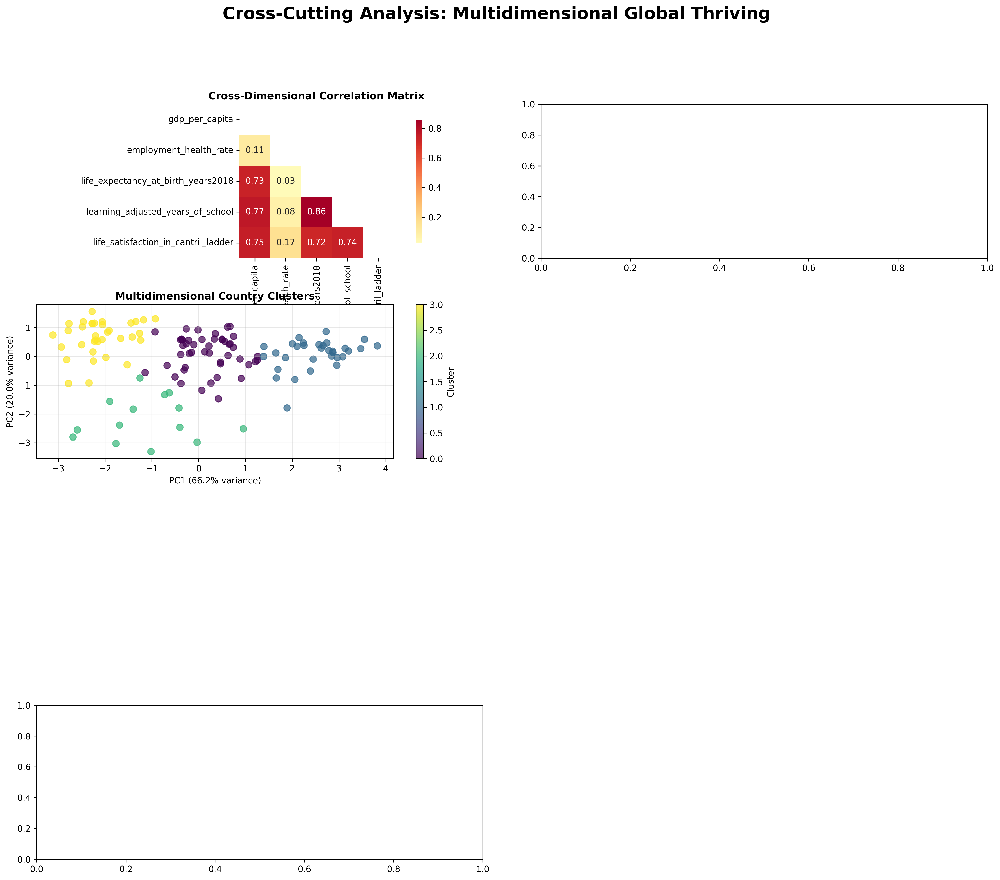

🔗 Cross-Cutting Analysis: Global Thriving Study
Comprehensive analysis across multiple dimensions of national thriving
📊 Executive Summary
🎯 Key Findings
💡 Main Insights
- Multidimensional Patterns: Countries show distinct patterns of development across economic, health, education, and social dimensions.
- Synergistic Relationships: 0 positive synergies found between different thriving dimensions.
- Development Archetypes: Countries follow different pathways - some specialize in specific dimensions while others pursue balanced development.
- Regional Variations: Significant differences exist between continents in overall thriving patterns.
🔗 Strongest Cross-Dimensional Relationships
Life Expectancy At Birth Years2018 vs Learning Adjusted Years Of School
Learning Adjusted Years Of School vs Life Expectancy At Birth Years2018
Gdp Per Capita vs Learning Adjusted Years Of School
Learning Adjusted Years Of School vs Gdp Per Capita
Gdp Per Capita vs Life Satisfaction In Cantril Ladder
🔗 Cross-Dimensional Relationships
This analysis examines how different dimensions of national thriving relate to each other, identifying synergies and potential trade-offs between economic, health, education, and social indicators.
Key Findings
- Found 12 statistically significant cross-dimensional relationships
- Analysis based on 132 countries with sufficient data
- Relationships span across all major thriving dimensions
Top Cross-Dimensional Relationships
| Dimension 1 | Dimension 2 | Indicator 1 | Indicator 2 | Correlation | Countries |
|---|---|---|---|---|---|
| Health | Education | Life Expectancy At Birth Years2018 | Learning Adjusted Years Of School | 0.859 | 128 |
| Education | Health | Learning Adjusted Years Of School | Life Expectancy At Birth Years2018 | 0.859 | 128 |
| Economic | Education | Gdp Per Capita | Learning Adjusted Years Of School | 0.767 | 128 |
| Education | Economic | Learning Adjusted Years Of School | Gdp Per Capita | 0.767 | 128 |
| Economic | Social | Gdp Per Capita | Life Satisfaction In Cantril Ladder | 0.751 | 132 |
| Social | Economic | Life Satisfaction In Cantril Ladder | Gdp Per Capita | 0.751 | 132 |
| Education | Social | Learning Adjusted Years Of School | Life Satisfaction In Cantril Ladder | 0.742 | 128 |
| Social | Education | Life Satisfaction In Cantril Ladder | Learning Adjusted Years Of School | 0.742 | 128 |
| Economic | Health | Gdp Per Capita | Life Expectancy At Birth Years2018 | 0.733 | 132 |
| Health | Economic | Life Expectancy At Birth Years2018 | Gdp Per Capita | 0.733 | 132 |
📊 Composite Thriving Indices
We created composite indices that combine multiple indicators within each dimension, as well as an overall thriving index that synthesizes all dimensions.
Average Score
Average Score
Top 10 Countries - Overall Thriving Index
| Rank | Country | Continent | Overall Score |
|---|
🎯 Multidimensional Clustering
Using machine learning clustering algorithms, we identified distinct groups of countries with similar patterns across multiple thriving dimensions.
Clustering Results
- 4 distinct country clusters identified
- Clustering based on 5 key indicators
- Each cluster represents a unique development pattern
Country Clusters
Cluster 0 (47 countries)
Key Strengths: None identified
Cluster 1 (32 countries)
Key Strengths: gdp_per_capita, life_expectancy_at_birth_years2018, learning_adjusted_years_of_school
Cluster 2 (14 countries)
Key Strengths: None identified
Cluster 3 (35 countries)
Key Strengths: None identified
📈 Key Visualizations
Cross-Cutting Analysis Overview
Comprehensive overview showing correlations, clustering, and overall thriving patterns
Cross-Dimensional Relationships

Detailed scatter plots showing relationships between different thriving dimensions
🔬 Methodology
Data Preparation
- Cleaned and standardized 5 indicators
- Handled missing values and outliers
- Transformed indicators for comparability
Correlation Analysis
- Pearson and Spearman correlations
- Statistical significance testing
- Cross-dimensional relationship mapping
Composite Indices
- Min-Max normalization (0-100 scale)
- Equal weighting within dimensions
- PCA-based alternative index
Clustering Analysis
- K-means clustering with standardized features
- Silhouette score optimization
- PCA for visualization
Data Coverage
Analysis includes 5 major thriving dimensions: Economic, Health, Education, Social, Demographics. Country coverage varies by indicator but includes major economies and representative countries from all continents.